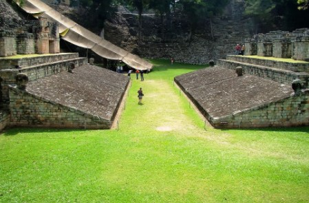

Campo de juego de las ruinas mayas

Considerado el centro social de la localidad. Este parque es, con mucho,
el patio de pelota más artística de Mesoamérica. Único a él son los
anotadores en las paredes adyacentes, que se asimilan a cabezas de
guacamayos. El trabajo final ejecutado en este juego de pelota se
enaltece a los días del gobernante 18 Conejo.